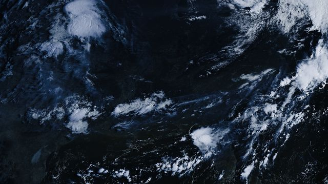

◂ GOES
All Types
GOES-19
East
HRIT
1694.1
home-beast
Ground Stn
EM78
Louisville
Full Disk
ABI
Louisville Weather
satellite + RF nowcast
GOES-19 (GOES-East) · received on home-beast + 60 cm dish · EM78 Louisville · auto-updates every ~20 min
STORM RISK: LOW
Partly cloudy, thinning
upstream activity decaying; dry upper air over the area (suppression)

Latest Eastern-US capture
native-res day/night view ▸
outlook for 2026-08-23 generated 09:58 local from this station's own GOES-19 captures · surface obs received over RF (APRS 144.390) · experimental nowcast, ~12 h horizon, no model data · home-beast + hamsdr, Louisville KY